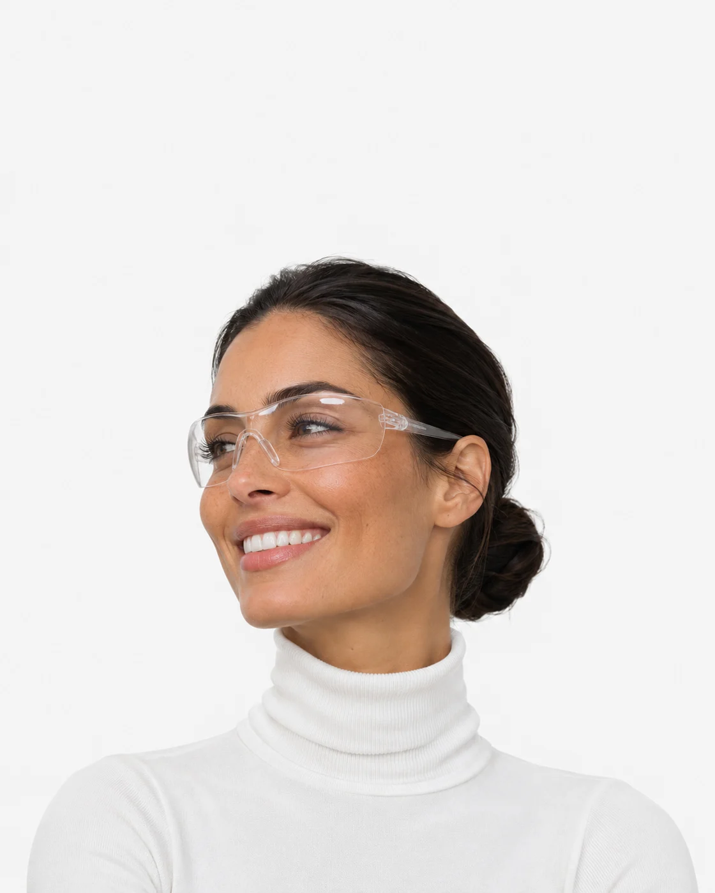
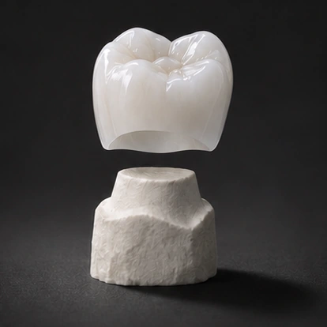

med in love dent
Стоматология в Минске.
Консультация — 35 BYN. Врач проведёт осмотр и обсудит с вами план и стоимость лечения.
Наш адресМинск, проспект Пушкина, 20
УслугиЧасы приёмаЕжедневно 09:00–22:00
и цены
Услуги клиники
Все направления
Варианты восстановления зуба коронкой. В прайсе представлены металлокерамика, диоксид циркония и E-max.


 Демопрофиль
Демопрофиль Демопрофиль
Демопрофиль Демопрофиль
Демопрофиль Демопрофиль
Демопрофиль
Выберите время
Позвоните администратору и расскажите, какая услуга вас интересует.
Подготовьтесь к визиту
Если есть снимки и заключения, уточните, в каком виде их взять с собой.
Обсудите план
На осмотре врач объяснит варианты лечения и уточнит стоимость процедур.